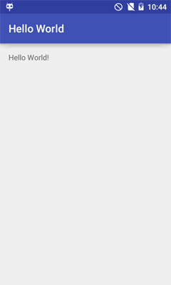
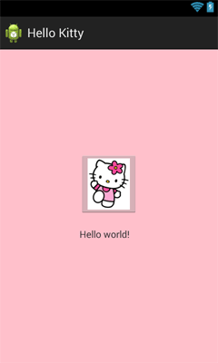
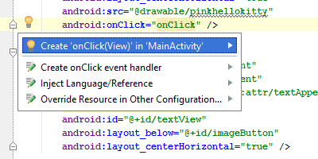
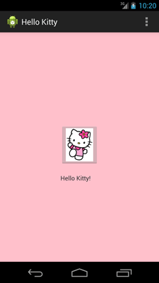

Урок 2. Hello Kitty - Создаём первое приложение для Android
После установки Android Studio (далее Студия) можно приступать к созданию своей первой программы.
Учтите, что на данный момент Студия постоянно обновляется, поэтому внешний вид окон и другие детали могут отличаться от данного примера. На данный момент статья опирается на версию 1.4.
В качестве языка программирования для Android используется Java. Для создания пользовательского интерфейса используется XML.
По традиции, заложенной в прошлом веке, каждый программист должен был написать «Hello World!» (Здравствуй, Мир!) в качестве первой программы. Времена меняются, и программа «Hello World!» уже встроена в среду разработки под Android в целях совместимости, а современные программисты должны писать программу Hello Android! (Привет, Android!).
Поэтому разобьём задачу на две части. Сначала запустим готовую программу Hello World! без написания кода, чтобы убедиться, что весь инструментарий корректно установился, и мы можем создавать и отлаживать программы. А потом уже напишем свою первую программу.
Создание нового проекта
Запускаем Студию и выбираем File | New | New Project.... Появится диалоговое окно мастера.
Поле Application name: - понятное имя для приложения, которое будет отображаться в заголовке приложения. По умолчанию у вас уже может быть My Application. Заменим на Hello World. В принципе вы могли написать здесь и Здравствуй, мир!, но у Android есть замечательная возможность выводить нужные строки на телефонах с разными языками. Скажем, у американца на телефоне появится надпись на английском, а у русского - на русском. Поэтому в первоначальных настройках всегда используются английские варианты, а локализованные строки подготовите позже. Необходимо сразу вырабатывать привычку к правильному коду.
Поле Company Domain: служит для указания вашего сайта. По умолчанию там может появиться ваше имя как пользователя компьютера. Если сайт у вас есть, то можете ввести его адрес, либо придумайте какое-нибудь название. Введённое имя запоминается и будет автоматически подставляться в следующих новых проектах. Экономия, однако.
Поле Package name: формирует специальный Java-пакет на основе вашего имени из предыдущего поля. В Java используется перевёрнутый вариант для наименования пакетов, поэтому сначала идёт ru, а потом уже название сайта. Пакет служит для уникальной идентификации вашего приложения, когда вы будете его распространять. Если сто человек напишет сто приложений с названием "Cat", то будет непонятно, где приложение, написанное разработчиком Василием Котовым. А приложение с именем пакета ru.vaskakotov.cat проще найти. Обратите внимание, что Гугл в своей документации использует пакет com.example в демонстрационных целях. Если вы будете просто копировать примеры из документации и в таком виде попытаетесь выложить в Google Play, то у вас ничего не выйдет - это название зарезервировано и запрещено к использованию в магазине приложений. Кнопка Edit позволяет отредактировать подготовленный вариант. Например, вы пишете приложение на заказ и вам нужно использовать имя пакета, утверждённое заказчиком, а не ваш вариант по умолчанию.
Третье поле Project location: позволяет выбрать место на диске для создаваемого проекта.

Нажимаем на кнопку Next и переходим к следующему окну. Здесь мы выбираем типы устройств, под которые будем разрабатывать своё приложение. В большинстве случае мы будет писать для смартфонов и планшетов, поэтому оставляем флажок у первого пункта. Также вы можете писать приложения для Android TV, Android Wear и Glass (я не устанавливал необходимый SDK для гуглоочков, поэтому последний флажок у меня не доступен).

Кроме выбора типа устройств, надо выбрать минимальную версию системы, под которую будет работать приложение. Выберите свой вариант. На данный момент Гугл поддерживает версии, начиная с API 7, выпуская специальные библиотеки совместимости для старых устройств. Но вы можете выбрать более современный вариант.
Если щёлкнуть по ссылке Help me choose, то откроется окно с графиком.
Идём дальше и снова нажимаем кнопку Next.
Здесь следует выбрать внешний вид экрана приложения.

Предложенные шаблоны позволяют сэкономить время на написание стандартного кода для типичных ситуаций. Опытный разработчик может вручную написать любой из предложенных вариантов, используя вариант Add No Activity, где никаких заготовок не будет.
Пару лет назад был только один шаблон. Список шаблонов постоянно пополняется и теперь их больше. Перечислю часть из них.
- Blank Activity
- Empty Activity
- Fullscreen Activity
- Google Maps Activity
- Google AdMod Ads Activity
- Login Activity
- Master/Detail Flow
- Navigation Drawer Activity (новинка)
- Scrolling Activity (новинка)
Шаблон Empty Activity предназначен для обычных телефонов. На картинке над названием шаблона вы видите приблизительный вид приложения с использованием данной заготовки. Для учебных программ в 99% подойдёт этот вариант. Практически все примеры на сайте написаны с помощью данного шаблона.
Шаблон Master/Detail Flow предназначен для планшетов с реализацией двухпанельного режима. Шаблон Fullscreen Activity можно использовать для игр, когда требуется дополнительное пространство без лишних деталей. Другие шаблоны нужны для создания приложений с гуглокартами или сервисами Google Play.
Итак, мы выбрали вариант Empty Activity и переходим к следующему окну.

Ну вот, мы закончили с первоначальной настройкой. Нажимаем кнопку Finish и смотрим, что дальше будет.
А дальше студия формирует проект и создаёт необходимую структуру из различных файлов и папок. Поначалу глаза разбегаются. Давайте разбираться.
Боковая левая часть студии имеет несколько вертикальных вкладок. Скорее всего у вас будет активна первая вкладка 1:Project. Вкладки Structure и Captures используются гораздо реже.
В левой части среды разработки на вкладке Android появится иерархический список из папок, которые относятся к проекту. В некоторых случаях желательно переключиться на режим Project, который показывает истинное расположение файлов. Но на первых порах удобнее использовать именно вид Android, который прячет служебные файлы, чтобы не путать новичков.
Содержание проекта
Вкладка Android содержит две основные папки: app и Gradle Scripts. Первая папка app содержит все необходимые файлы приложения - код, ресурсы картинок и т.п. Вторая папка служит для различных настроек, управления проектом и многих других вещей.
Сейчас нас должна интересовать папка app. Раскройте её. В ней находятся три папки: manifest, java, res.
manifest
Папка manifest содержит единственный файл манифеста AndroidManifest.xml. В этом файле должны быть объявлены все активности, службы, приёмники и контент-провайдеры приложения. Также он должен содержать требуемые приложению разрешения. Например, если приложению требуется доступ к сети, это должно быть определено здесь. «AndroidManifest.xml» можно рассматривать, как описание для развертывания Android-приложения.
Более подробно о структуре манифеста читайте в дополнительной статье Файл AndroidManifest.xml
java
Папка java содержит две подпапки - рабочую и для тестов. Рабочая папка имеет название вашего пакета и содержит файлы классов. Сейчас там один класс MainActivity. Папку для тестов можете не трогать.
res
Папка res содержит файлы ресурсов, разбитых на отдельные подпапки.
- drawable — в этих папках хранят графические ресурсы - картинки и xml-файлы, описывающие цвет и фигуры.
- layout — в данной папке содержатся xml-файлы, описывающие внешний вид форм и различных элементов форм. После создания проекта там уже имеется файл activity_main.xml, который отвечает за внешний вид главного окна приложения.
- mipmap - здесь хранят значки приложения под разные разрешения экрана
- values — тут у нас располагаются какие-либо строковые ресурсы, ресурсы цветов, тем, стилей и измерений, которые мы можем использовать в нашем проекте. Здесь вы можете видеть папки colors.xml, dimens.xml, strings.xml, styles.xml
Со временем вы будет свободно ориентироваться в этих папках, пока не забивайте себе голову.
Работа с проектом - Здравствуй, Мир!
Как уже говорилось, программа Hello, World! уже встроена в любой новый проект, поэтому вам даже не нужно ничего писать. Просто нужно запустить проект и получить готовую программу!
Для изучения вам нужно открыть два файла - MainActivity (скорее всего он уже открыт) и activity_main.xml (res/layout) в центральной части Студии. Если файлы не открыты, то откройте их самостоятельно двойным щелчком для редактирования (или просмотра). Таким способом вы можете открыть любой нужный вам файл.
Не будем пока изучать код, а просто нажмём на зелёный треугольник Run (Shift+F10) на панели инструментов в верхней части студии для запуска приложения.
Если вы не настроили эмулятор, значит вы не читали предыдущий урок. Настройте сначала эмулятор и запускайте проект снова. Либо подключайте реальное устройство.
Если всё сделали правильно, то в эмуляторе загрузится ваша программа. Поздравляю!
Два дня назад я обновил студию и она не захотела запускать проект. Для решения проблемы мне пришлось открыть файл build.gradle (Module: app) и немного отредактировать его. В блок defaultConfig добавил новую строку:
defaultConfig {
...
multiDexEnabled true
}
И закомментировал строку:
dependencies {
compile fileTree(dir: 'libs', include: ['*.jar'])
// testCompile 'junit:junit:4.12'
compile 'com.android.support:appcompat-v7:23.0.1'
}
В предыдущих версиях студии таких проблем не было. Может позже починят, чтобы запускалось сразу без проблем.
Итак, если программа загрузилась в эмуляторе, то увидите окно приложения с надписью Hello World. Заголовок у программы будет также Hello World. Все эти строки можно найти в файле res/values/strings.xml и отредактировать при желании.

Теперь посмотрим на код. Сначала изучим activity_main.xml.
Смотреть его можно в двух режимах - Design и Text.
Откройте в режиме Text.
<RelativeLayout
xmlns:android="http://schemas.android.com/apk/res/android"
xmlns:tools="http://schemas.android.com/tools"
android:layout_width="match_parent"
android:layout_height="match_parent"
android:paddingLeft="@dimen/activity_horizontal_margin"
android:paddingRight="@dimen/activity_horizontal_margin"
android:paddingTop="@dimen/activity_vertical_margin"
android:paddingBottom="@dimen/activity_vertical_margin"
tools:context=".MainActivity">
<TextView
android:text="@string/hello_world"
android:layout_width="wrap_content"
android:layout_height="wrap_content" />
</RelativeLayout>
Если смотреть на монитор, то у вместо строчки android:paddingLeft="@dimen/activity_horizontal_margin" вы можете увидеть строчку android:paddingLeft="16dp". Однако, если вы подведёте курсор мыши к тексту, то увидите подсказку. Более того, если вы нечаянно щёлкните по слову, то увидите реальный код, который скрывается за словами. Это относится и к другим параметрам, которые окрашены в салатовый прямоугольник. Иными словами, Студия автоматически извлекает значения из ресурсов и подставляет их в код, чтобы вам не приходилось вспоминать, что скрывается за кодом. Комбинация клавиш Ctrl + - (минус) свернёт обратно.
Немного о XML-коде. Имеется специальный контейнер RelativeLayout, в котором размещён компонент TextView, предназначенный для вывода текста.
Теперь посмотрим на Java-код (MainActivity.java)
package ru.alexanderkazmin.helloworld;
import android.support.v7.app.AppCompatActivity;
import android.os.Bundle;
public class MainActivity extends AppCompatActivity {
@Override
protected void onCreate(Bundle savedInstanceState) {
super.onCreate(savedInstanceState);
setContentView(R.layout.activity_main);
}
}
Перед вами открыт файл класса, где имя класса MainActivity совпадает с именем файла с расширением java (это правило, установленное языком Java). В первой строке идет название пакета - его мы задавали при создании проекта (Package Name). Далее идут строки импорта необходимых классов для проекта. Для экономии места они свёрнуты в одну группу. Разверните её. Если имена классов выводятся серым цветом, значит они не используются в проекте (подсказка Unused import statement) и можете спокойно удалить лишние строки.
Далее идёт объявление самого класса, который наследуется (extends) от абстрактного класса Activity. Это базовый класс для всех экранов приложения. Не исключено, что у вас будет AppCompatActivity, если при создании проекта вы оставили поддержку старых устройств. В старых версиях не было плюшек, которые появились после Android 4, поэтому для них была создана специальная библиотека совместимости, которая позволяет использовать новинки от новых версий Android в старых программах. Класс AppCompatActivity как раз и относится к библиотеке совместимости. Считайте её бедным родственником базовой Activity. У неё есть все нужные методы и вспомогательные классы, но названия могут немного различаться. И смешивать названия нельзя. Если уж используете класс из библиотеки совместимости, то методы берите соответствующие.
В самом классе мы видим метод onCreate() – он вызывается, когда приложение создаёт и отображает разметку активности. Метод помечен как protected и сопровождается аннотацией @Override (переопределён из базового класса). Аннотация может пригодиться вам. Если вы сделаете опечатку в имени метода, то компилятор сможет предупредить вас об этом, сообщив об отсутствии такого метода у класса Activity.
Разберём код метода.
Строка super.onCreate(savedInstanceState); – это конструктор родительского класса, выполняющий необходимые операции для работы активности. Эту строчку вам не придётся трогать, оставляйте без изменений.
Вторая строчка setContentView(R.layout.activity_main); представляет больший интерес. Метод setContentView(int) подключает содержимое из файла разметки. В качестве аргумента мы указываем имя файла без расширения из папки res/layout. По умолчанию проект создаёт в нём файл activity_main.xml. Вы можете переименовать файл или создать свой файл с именем qwerty.xml и подключить его к своей активности. Тогда код будет выглядеть так:
setContentView(R.layout.qwerty);
Чтобы ваш код был аккуратным, старайтесь придерживаться стандартов. Если вы создаёте разметку для активности, то используйте префикс activity_ для имени файла. Например, разметка для второй активности может иметь имя activity_second.xml.
Hello Kitty!
Вы создали новую программу, но это ещё не повод считать себя программистом, так как вы не написали не единой строчки кода. Настало время набраться смелости и создать программу "Hello Kitty!". На данный момент наша программа слишком проста. Представьте себе, что у вас на экране должны располагаться несколько кнопок, текстовых полей, картинок. Каждому объекту нужно задать размеры, координаты, цвет, текст и так далее. Android поддерживает способ, основанный на XML-разметке, который будет напоминать разметку веб-страницы. Начинающие программисты могут использовать визуальный способ перетаскивания объектов с помощью мыши. Более продвинутые могут писать код вручную. Чаше используется комбинированный подход.
Файлы XML-разметки находятся в папке res/layout вашего проекта. Слово "res" является сокращением от слова "resources" (ресурсы). Папка содержит ресурсы, не связанные с кодом. Кроме разметки, там же содержатся изображения, звуки, строки для локализации и т.д.
Раскройте слева в структуре проектов папки res/layout и дважды щелкните на файле activity_main.xml, если он у вас закрыт. Обратите внимание, что XML-файлы можно просматривать в двух режимах: текстовом и визуальном. Для этого предназначены две вкладки в нижней части окна редактора: Design и Text.

Переключитесь в режим Text.
Структура XML-файла достаточна проста - стандартное дерево XML-элементов, где каждый узел является именем класса View (TextView - один из элементов View). Вы можете создать интерфейс программы, используя структуру и синтаксис XML. Подобный подход позволяет разделить код программы и визуальное представление.
Можно продолжить работу над открытым проектом Hello World и модифицировать её под новые задачи. Для приобретения твёрдых навыков можете снова создать новый проект, не подглядывая в описание. Назовите проект Hello Kitty и повторите все предыдущие шаги.
Когда разметка открыта в графическом представлении, то слева от основной части редактора кода можно увидеть панель инструментов, в которой сгруппированы различные элементы по группам Layouts, Widgets, Text Fields и так далее. В группе Widgets найдите элемент ImageButton, перетащите её на форму и отпустите. Точное расположение нас не интересует, поэтому не заморачивайтесь по этому поводу, постарайтесь разместить компонент в центре экрана активности.
Теперь научимся менять фон для экрана приложения. Сейчас у нас экран белого цвета. Подготовим цветовой ресурс с нужным цветом.
Возвращаемся в файл разметки activity_main.xml. Справа найдите вкладку Properties, в которой отображаются свойства для выбранного элемента. Новички часто путаются на первых порах и начинают менять свойства не у тех элементов, которые им были нужны. Сейчас у вас есть сама форма, графическая кнопка ImageButton и текстовая метка TextView с надписью Hello World!. Пощёлкайте по этим элементами, чтобы увидеть, как меняется содержание свойств в панели свойств. Так как мы собираемся работать с фоном экрана приложения, то щёлкните в области формы и в панели свойств найдите свойство background. Щелкните рядом с этим словом во второй колонке, где нужно прописывать значения. Появится текстовое поле, в которое можно ввести значение вручную, и кнопка с тремя точками, которая запустит диалоговое окно для создания ресурса.

Переходим на вкладку Color и выбираем цвет, удобным вам способом. Я ввёл значение FFC0CB в текстовом поле с меткой #.

Нажимаем кнопку OK и форма окрасится в розовый цвет. Получилось глаМУРненько.
Если переключиться в текстовый режим, то увидим, что у элемента RelativeLayout добавилась строчка:
android:background="#ffffc0cb"
Мы напрямую установили нужное нам значение. В реальности это неправильный подход. Вы должны использовать цветовые ресурсы, поэтому изучим правильный вариант добавления цвета.
Снова нажимаем на кнопку с тремя точками у свойства background и в диалоговом окне переходим на вкладку Project. Нажимаем на кнопку New Resource... и выбираем вариант New Color Value.... Появится ещё одно диалоговое окно. Заполняем пустые поля нужными значениями. Обратите внимание, что ресурс будет сохранён в новом файле colors.xml. Это общепринятый стандарт для хранения цветов, хотя вы можете сохранить ресурс и в файле strings.xml и styles.xml, которые можно выбрать из выпадающего списка.

Нажимаем OK и смотрим на изменения. Теперь цвет задан следующим образом:
android:background="@color/background_color"
Далее поменяем картинку для графической кнопки. Находим подходящее изображение и копируем его, например, в папку res/drawable-hdpi. Можно в Проводнике скопировать нужную картинку и, переключившись на студию, вставить её в нужную папку студии.
Картинку можете взять у меня.
Когда вы поместите графический файл в указанную папку, то студия автоматически создаёт ресурс типа Drawable с именем файла без расширения, к которому можно обращаться программно. Выделяем элемент ImageButton на форме и в панели свойств выбираем свойство src. Снова щёлкаем на кнопке с тремя точками и выбираем ресурс в категории Drawable - вы там должны увидеть ресурс pinkhellokitty (имя добавленного ранее файла).
Там же в окне свойств находим свойство onClick и вручную прописываем onClick - это будет именем метода для обработки нажатия на кнопку. Вы можете придумать и другое имя, например, onButtonPressed, но я привык к такому подходу.
Мы закончили работу с графическим интерфейсом приложения. Напоследок, выделите элемент TextView с надписью Hello, World и в окне свойств посмотрите на его идентификатор (ID). Если там пусто, то удалите его, он не оправдал наших надежд. В категории Widgets найдите компонент Large Text и перетащите его на форму приложения. Постарайтесь разместить его под графической кнопкой с котёнком.
У этого компонента точно будет что-то написано в свойстве id. Скорее всего, это будет @+id/textView. Запомните его. Впрочем, мы могли не удалять первый компонент, а прописать идентификатор вручную. Но мне пришлось бы объяснять лишние детали, а так сразу получили результат. Вот я не удалял его и у меня экран выглядит так. А у вас будет текст Large Text. Ничего страшного.

У меня получилось следующее:
<RelativeLayout xmlns:android="http://schemas.android.com/apk/res/android"
xmlns:tools="http://schemas.android.com/tools"
android:layout_width="match_parent"
android:layout_height="match_parent"
android:background="@color/background_color"
android:paddingBottom="@dimen/activity_vertical_margin"
android:paddingLeft="@dimen/activity_horizontal_margin"
android:paddingRight="@dimen/activity_horizontal_margin"
android:paddingTop="@dimen/activity_vertical_margin"
tools:context="ru.alexanderklimov.hellokitty.MainActivity">
<ImageButton
android:id="@+id/imageButton"
android:layout_width="wrap_content"
android:layout_height="wrap_content"
android:layout_centerHorizontal="true"
android:layout_centerVertical="true"
android:onClick="onClick"
android:src="@drawable/pinkhellokitty" />
<TextView
android:id="@+id/textView"
android:layout_width="wrap_content"
android:layout_height="wrap_content"
android:layout_alignLeft="@+id/imageButton"
android:layout_alignStart="@+id/imageButton"
android:layout_below="@+id/imageButton"
android:layout_marginTop="42dp"
android:text="Large Text"
android:textAppearance="?android:attr/textAppearanceLarge" />
</RelativeLayout>
Установите курсор мыши внутри текста "onClick" у кнопки и нажмите комбинацию Alt+Enter
В всплывающем окне выберите вариант Create 'onClick(View)' in 'MainActivity'.

В коде класса MainActivity появится заготовка для обработки щелчка кнопки.
Раз уж у нас теперь открыт файл MainActivity.java, то продолжим теперь работу в нём. Так как мы собираемся менять текст в текстовой метке, необходимо прописать данный элемент в коде. До метода onCreate() наберите строчку:
private TextView mHelloTextView;
Мы объявили переменную типа TextView под именем mHelloTextView.
Если вы набирали вручную и при подсказках использовали клавишу Enter, то класс TextView автоматически импортируется и запись появится в секции import. Если вы просто копируете текст с сайта, то студия подчеркнёт название класса TextView и предложит импортировать его вручную.
Далее внутри метода onCreate() после вызова метода setContentView() добавьте строку:
mHelloTextView = (TextView)findViewById(R.id.textView); // помните, я просил запомнить идентификатор?
Избегайте соблазна скопировать строку с сайта и вставить в код, пишите самостоятельно и активно используйте автозавершение (Ctrl+Пробел) при наборе слов. Студия часто сама активно помогает подсказками. Теперь система знает о существовании элемента TextView, и мы можем к нему обращаться для изменения различных свойств, например, поменять текст.
Переходим к заготовке для щелчка кнопки.
public void onClick(View view) {
}
В следующих занятиях мы подробнее разберём работу с данным методом, пока просто пишем код между фигурными скобками:
mHelloTextView.setText("Hello Kitty!");
Мы обращаемся к элементу mHelloTextView и через его метод setText() программно меняем текст на нужные слова.
Запускаем программу и нажимаем на кнопку с изображением котёнка. Если всё сделали правильно, то отобразится замечательная фраза. С этого момента можете считать себя настоящим программистом - вы научились создавать цветовые и графические ресурсы, менять фон у приложения через XML-разметку, обрабатывать нажатия кнопки и выводить текстовые сообщения.

В папке app\build\outputs\apk проекта можно найти готовый APK-файл, который вы можете выложить у себя на сайте и дать скачать знакомым девушкам (в телефоне должно быть разрешение на установку неподписанных приложений), вы станете невероятно круты в их глазах.
Забегая вперёд, скажу одну вещь. Каждому приложению выделяется определённый объем памяти под картинки. В новых устройствах чуть больше, в старых поменьше. Но в любом случае не нужно пытаться загрузить в этом примере фотографию своего любимого кота объёмом в несколько десятков мегабайт, иначе можете получить ошибку в приложении. Позже вы узнаете, как лучше использовать большие картинки.